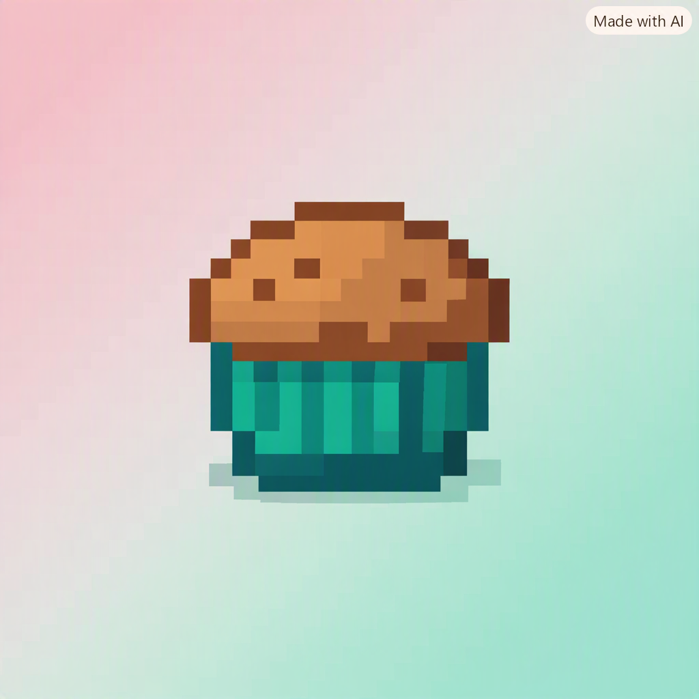
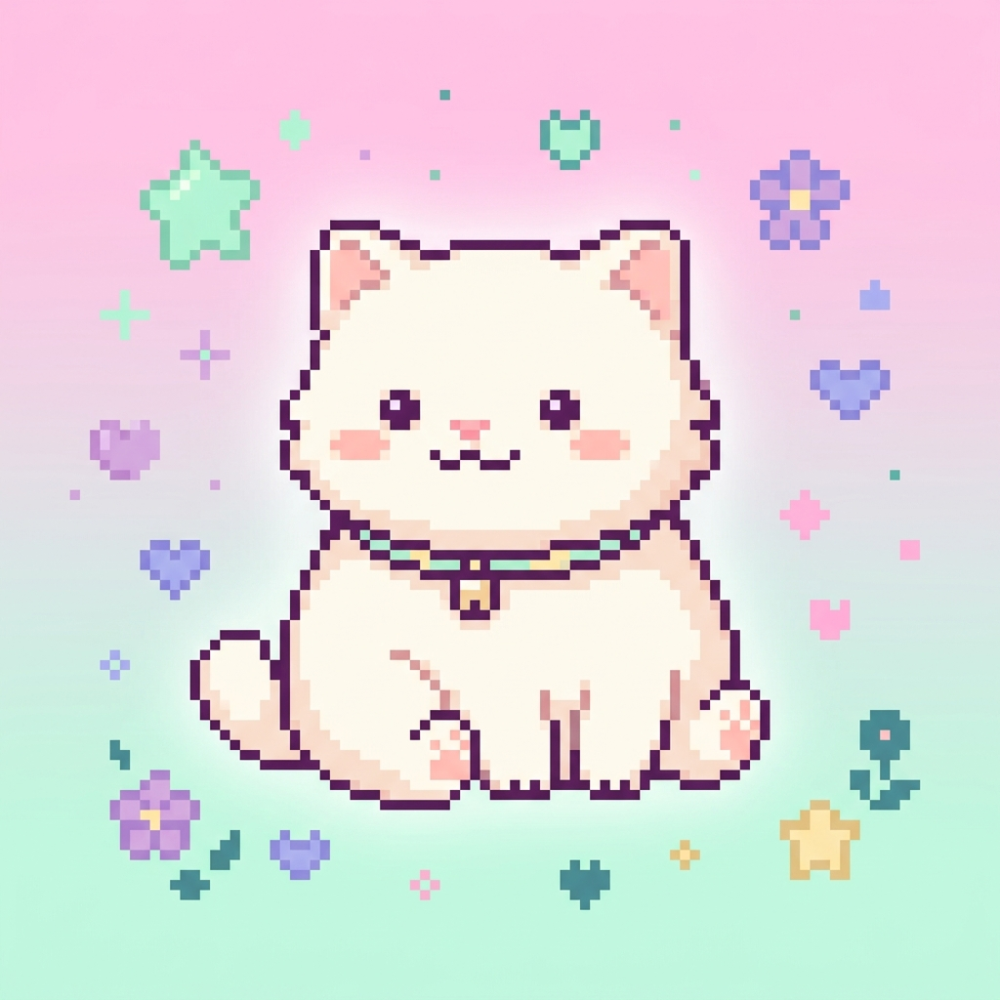
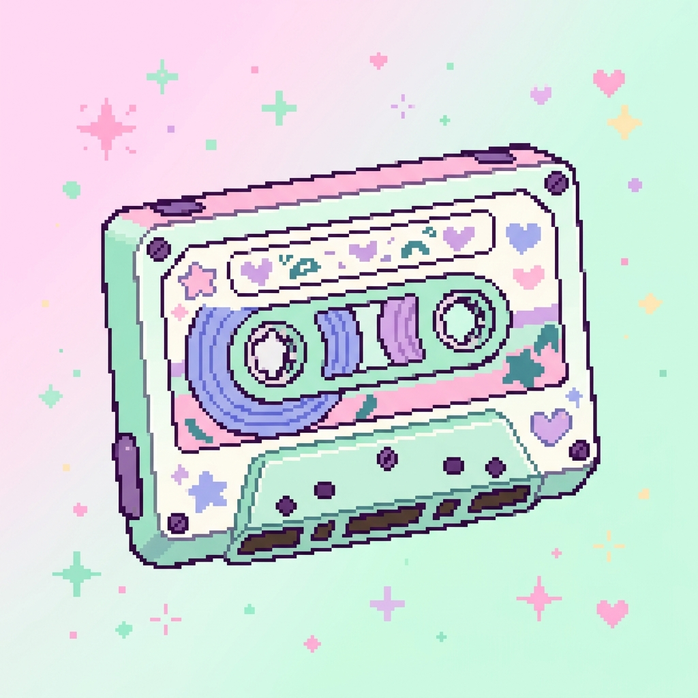

Meu primeiro post ꉂ(˵˃ ᗜ ˂˵)
Meu primeiro post sobre desenhos e séries! ✐
Por: Rita de Cássia ⚝
Seja bem-vindo/a ao meu blog de desenhos e séries!!! ^^
𝜗ৎ ❝Compartilhando o conhecimento de animações, séries e filmes❞ 𝜗ৎ
Meu primeiro post ꉂ(˵˃ ᗜ ˂˵)
Por: Rita de Cássia ⚝
Seja bem-vindo/a ao meu blog de desenhos e séries!!! ^^

Meu segundo post (˶ᵔ ᵕ ᵔ˶)
Por: Rita de Cássia ⚝

Terceiro post 🍿
Por: Rita de Cássia ⚝
Quando quero assistir alguma coisa nova, gosto de procurar sites que tenham várias opções de filmes e séries.
Um dos sites que eu conheci é o RedeCanais:
🍿 RedeCanais - Assistir Filmes e Séries
Quarto post 🎧
Por: Rita de Cássia ⚝
É muito difícil escolher só três, mas esses personagens com certeza estão entre os meus favoritos! ૮ ˶ᵔ ᵕ ᵔ˶ ა

Quinto post ฅ^•ﻌ•^ฅ
Por: Rita de Cássia ⚝
Se você gosta de histórias diferentes, personagens marcantes e universos bem construídos, vale a pena conhecer essas obras! ♡
Sexto post ୨୧
Por: Rita de Cássia ⚝
Se eu pudesse escolher um personagem para passar uma tarde assistindo desenhos e conversando sobre séries, provavelmente escolheria o Steven!
Ele é divertido, carinhoso e sempre tenta ajudar as pessoas ao seu redor. Acho que seria uma amizade muito divertida. (˶ᵔ ᵕ ᵔ˶)
E você? Qual personagem escolheria? 👀